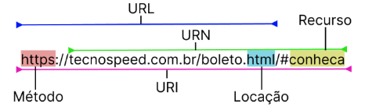
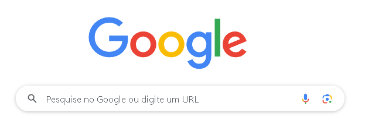
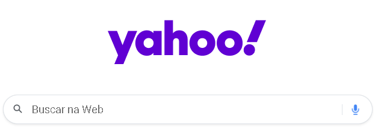
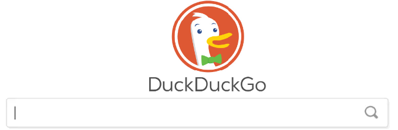

Extensible Markup Language (Linguagem de marcação extensivel) é um dos grandes padrões para trocas de dados entre sistemas e para armazenamentos. Criada em 1996 sendo uma metalinguagem de marcação definido pelo W3C (World Wide Web Consortium) e baseada na SGML.
Essa linguagem permite definir e armazenar dados de forma compartilhável, facilitando o intercâmbio de informações entre sistemas de computador, como sites e bancos de dados. Regras predefinidas facilitam a transmissão precisa e eficiente de dados, como arquivos XML, em redes.
XML é uma linguagem de marcação usada para definir dados, mas não realiza operações de computação. Pode ser implementada com qualquer linguagem de programação para gerenciar dados estruturados. Por não ter tags pré-definidas, é o usuário quem vai definir as tags do documento XML de acordo com as necessidades dos dados que serão armazenados .
<?xml version="1.0"encoding="UTF-8"?>
<cdfs>
<cdf id="1">
<nome>Gabriel Fróes</nome>
<nascimento>1980-07-04</nascimento>
<redessociais>
<twitter>gabrielfroes</twitter>
<instagram>gabrielroccofroes</instagram>
</redessociais>
</cdf>
<cdf id="2">
<nome>Vanessa Weber</nome>
<nascimento>1981-03-27</nascimento>
<redessociais>
<twitter>nessaweberfroes</twitter>
<instagram>vanessaweberfroes</instagram>
</redessociais>
</cdf>
</cdfs>
Vídeo 1: XML // Dicionário do Programador (Código Fonte TV)
Vídeo 2: O que é XML (DBA PRO)
Site: O que é XML? (Amazon)
Interface de Programação de Aplicações (API) é uma maneira de trazer informações de outras páginas, sistemas, softwares e plataformas diretamente para a sua interface, sem exigir que o usuário acesse outro sistema. Em resumo, a API é criada para permitir que um sistema utilize as funcionalidades de outro sistema.
É uma ferramenta que auxilia os programadores, evitando a necessidade de criar tudo do zero. A API funciona como uma ponte entre o seu programa e outra plataforma da qual deseja extrair informações. É a interface perfeita para a comunicação entre sistemas, permitindo o compartilhamento de ações, ferramentas, padrões e protocolos, gerando uma “conversa” de sistema para sistema.
Para facilitar a compreensão do que é uma API, muitos usam o exemplo do restaurante.
As APIs permitem a disponibilização de serviços como reservas de hotéis, compras de passagens aéreas, cálculos de frete em lojas online, entre outros.
Vídeo 1: Você precisa entender o que é API pra melhorar como DEV! (Rafaella Ballerini)
Vídeo 2: API // Dicionário do Programador (Código Fonte TV)
URI e URL são basicamente links. Esses termos se referem ao endereço de uma determinada página na web. Por exemplo, o que você vê na barra de endereço do navegador, com o nome do site seguido de barras, números e símbolos, como no caso de "https://www.youtube.com".
Ao acessar endereços como:
Você é direcionado ao servidor que contém informações sobre URI e URL, por exemplo, sendo a URL parte da URI.
Exemplo de protocolos que não são HTTP ou HTTPS:
URLs sempre começam com um protocolo (http, ftp, etc) e geralmente contendo informações sobre o nome da rede hospedeira (website.com) e um caminho dentro dos arquivos:
(/páginas/categoria/artigo.html).
Esse é o nome do professor, e é um indentificador. Ele é como uma URI, mas não pode ser uma URL pois não diz nada sobre como localizá-lo ou encontrá-lo. Então, existem centenas ou milhares de outros Aguinaldo Alves no Brasil.
Localizador que identifica uma localização física específica, sendo tanto um localizador quanto um identificador.
Vídeo: QUAL A DIFERENÇA ENTRE URL, URI E URN (Iglu)
Site 1: QUAL A DIFERENÇA ENTRE URL, URI E URN (Iglu)
Site 2: URL ou URI, qual a diferença? (William Oliveira)
Remote Procedure Call (Chamada de Procedimento Remoto) é um protocolo de comunicação que permite que computadores clientes e computadores servidor se comuniquem e executem procedimentos remotamente como se fossem local. Em outras palavras, o RPC permite que computadores se comuniquem entre si por meio de uma rede, facilitando a execução de procedimentos em sistemas remotos.
Imagine um sistema de gestão de estoque em que vários dispositivos, como caixas registradoras e terminais de inventário, precisam acessar saldo de um produto em um servidor central. O cliente envia uma solicitação RPC ao servidor com o procedimento "Verificar Saldo" e os parâmetros, como o código do produto. O servidor realiza o procedimento, verifica o saldo e envia a quantidade disponível como resposta ao cliente. Todo esse processo ocorre de maneira transparente para o usuário, como se a operação fosse realizada localmente.
Site: RPC - chamada de procedimento remoto [remote procedure call] (DicApp)
Os portais web são ferramentas que permitem o acesso a informações e serviços de uma empresa ou organização para um público mais limitado, como clientes, funcionários, fornecedores ou parceiros de negócios. Um portal web pode ser projetado para fornecer acesso fácil e rápido a informações e serviços, como gerenciamento de contas, suporte ao cliente, recursos de autoatendimento, relatórios de desempenho, entre outros.
O portal web é projetado para fornecer uma experiência personalizada e eficiente para seus usuários, oferecendo recursos de acordo com suas necessidades e preferências individuais.
Um portal é um site na internet projetado para aglomerar e distribuir conteúdos de várias fontes diferentes de maneira uniforme, sendo um ponto de acesso para uma série de outros sites ou subsites internamente ou externamente ao domínio ou subdomínio da empresa gestora do portal.
Site: SAIBA O QUE SÃO PORTAIS WEB E COMO ELES PODEM BENEFICIAR O SEU NEGÓCIO (Compila)
Os buscadores ou Site de Busca é um serviço capaz de indexar grande quantidade de dados/informações presentes na internet e disponibilizar aos usuários uma forma fácil, rápida e eficiente de localizar o conteúdo.
Google - é um mecanismo de busca bem conhecido e padrão em navegadores, como o Google Chrome,Mozilla Firefox, Opera.
Bing - é um mecanismo de busca criado pela Microsoft e utilizado como padrão pelos navegadores Internet Explorer e Microsoft Edge.
Yahoo! - é um sistema de busca bem antigo mas conhecido e que ainda é utilizado.
DuckDuckGo - é um buscador que promete ser uma ferramenta que evita rastreamento do usuário mantendo a privacidade, não armazenando informações pessoais, como histórico de pesquisa, endereço IP ou qualquer outra informação identificável.
Vídeo: Sites de busca na internet (Dicionário de Informática)
Sites Corporativos (ou Intitucionais) é um site criado para trazer informações de um negócio ou de uma empresa para qualquer pessoa na internet. Apresentando sobre a empresa, quando surgiu, qual sua missão, os produtos e serviços que ela fornece entre outros assuntos.
Um exemplo, é o site da Xioami Brasil.
Sites educativos são criados para fornecer recursos de aprendizado, materiais didáticos e informações educacionais a estudantes, professores e ao público em geral.
Um exemplo é o SIGAA, utilizado pelo CEFET-MG.
Os sites corporativos são voltados para clientes, investidores, parceiros e funscionários, com um foco em negócios e marketing, sites educativos atendem estudantes, educadores e pesquisadores, com um foco na disseminação de conhecimento e no suporte ao aprendizado. A diferença principal reside no propósito e no público-alvo de cada tipo de site, que orienta tanto o conteúdo quanto o design e as funcionalidades oferecidas.
Vídeo: O QUE SÃO SITES CORPORATIVOS | TIPOS DE SITES (Anderson Santana)
Blogs são plataformas onde os usuários compartilham informações, opiniões, experiências e conteúdo variado. Geralmente atualizados regularmente, os blogs permitem interação por meio de comentários. Exemplos incluem blogs pessoais, empresariais, corporativos e de notícias.
Seguindo a mesma direção as redes sociais são espaços online onde os usuários criam perfis, se conectam e compartilham conteúdo, como fotos, vídeos e mensagens. Projetadas para facilitar a interação social, as redes sociais possibilitam seguir, curtir e comentar nas postagens de outros usuários. Exemplos são TikTok e Instagram.
Já sites de E-commerce são plataformas para compra e venda online, permitindo aos usuários navegar por produtos, efetuar compras e transações financeiras. Exemplos incluem Amazon e Mercado Livre.
As plataformas bancárias online são disponibilizadas pelos bancos para que os clientes acessem suas contas, realizem transações, paguem contas e realizem operações bancárias. Esses sites exigem autenticação segura e são protegidos por criptografia para garantir a segurança das informações dos clientes, como Banco do Brasil e Bradesco.
E por último, a multimídia combina diferentes tipos de mídia, como texto, imagens, áudio, vídeo e animação, para transmitir informações e criar experiências interativas. Essa forma de comunicação utiliza diversos meios para transmitir mensagens de maneira eficaz e envolvente. Exemplos incluem gravadores de vídeo como câmera, televisão e internet.